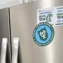
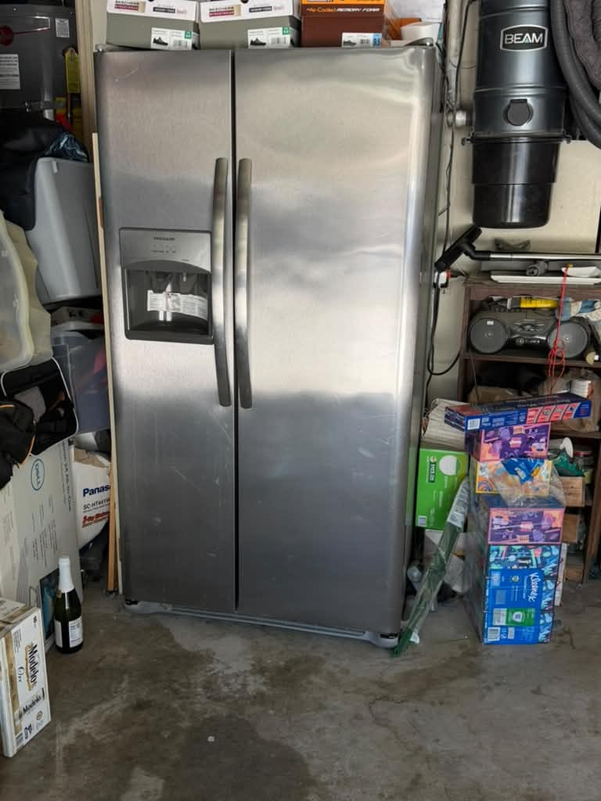
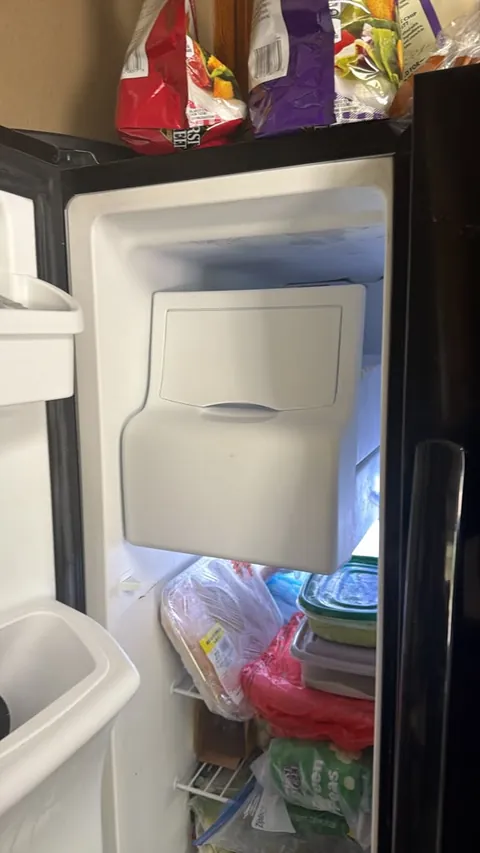
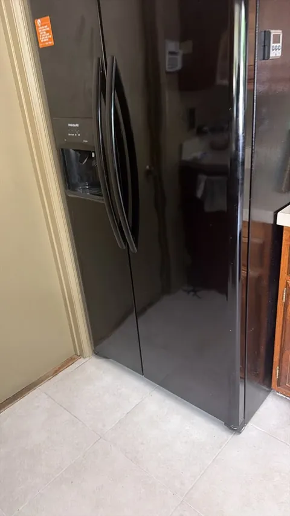
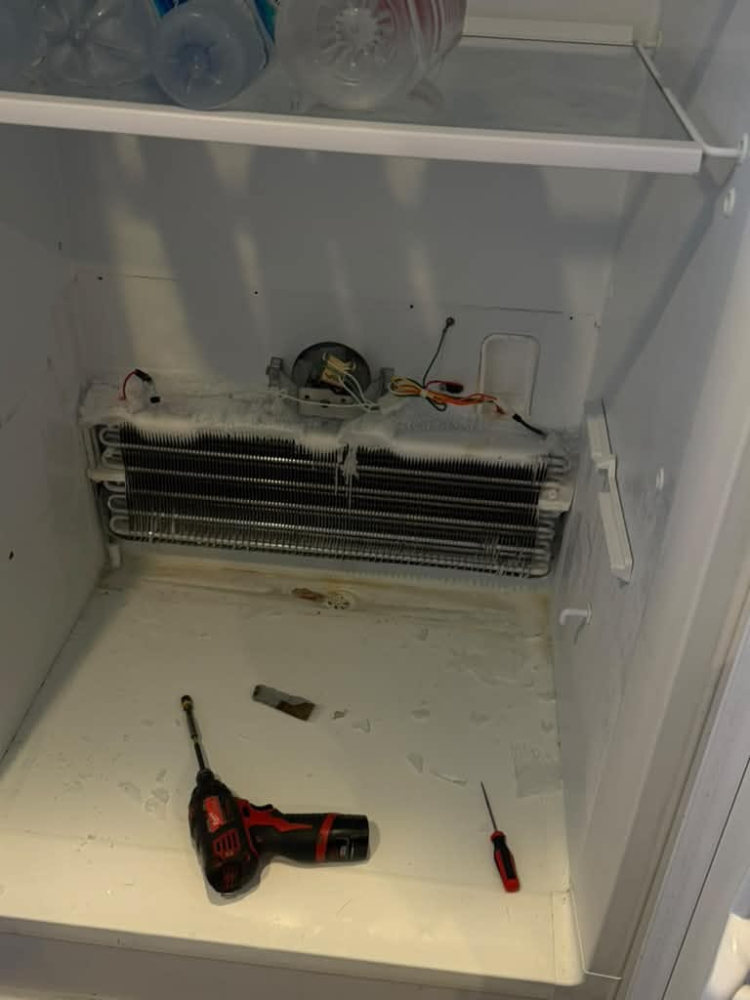

Westminster, CA
Refrigerators that won't cool, gas ranges with a weak igniter, dishwashers that won't drain, front-load washers with a torn door boot, and dryers that won't heat. We know Frigidaire, one of America's most popular appliance brands. Same-day service available.
5.0 · 156 Google reviewsMon–Sat, 8am–7pm.

Family-owned since 2017 · Licensed, bonded & insured
Photos from recent Frigidaire jobs. A refrigerator in Westminster that stopped cooling, where our technician AJ diagnosed the evaporator fan system and confirmed proper temperatures before leaving. A side-by-side in Mission Viejo that had quit making ice: the ice maker and the water inlet valve feeding it were both replaced on the same visit, which is why that job appears twice below. A freezer in Yorba Linda that had its evaporator fan replaced. A refrigerator in Chino Hills that had stopped cooling, where the damper control was replaced. And a dishwasher in Irvine that was not draining.

Westminster, CA


Mission Viejo, CA

Chino Hills, CA

Not sure if it's a Frigidaire or an Electrolux? Frigidaire is Electrolux-built, so the two share the same platforms and parts. See our Orange County refrigerator repair service. For Electrolux-branded units, see our Electrolux appliance repair service.
From our 156 verified 5-star Google reviews
Professional, Fast, and fair priced. AG is great. Visited and fixed the problem on short notice.
Great fast & friendly service!!! Will definitely be my go to guy for any service or repairs!!!
AG had a lot of insight into what was wrong with my fridge. He fixed it and also fixed my front door.
Here is exactly what happens from your first call to a fully working Frigidaire appliance.
Request a RepairEstimates vary by brand, part availability, and diagnosis. Final quote is provided before repair. See full pricing guide
Frigidaire is one of the most widely owned appliance brands in America, and its Electrolux-family parts and platforms are distinct from the Whirlpool world. We service the full Frigidaire lineup, from budget Standard models to premium Gallery and Professional built-ins.
Frigidaire appliances fail in specific, recognizable ways, and because Frigidaire is Electrolux-built on its own platform, the parts and faults are different from Whirlpool-family machines. These are the repairs our technicians handle most often on Orange County homes.
No, Frigidaire is not owned by Whirlpool. Frigidaire is owned by the Electrolux Group, the Swedish appliance giant that is the world's second-largest appliance maker. Electrolux builds Frigidaire alongside its own Electrolux-brand appliances on shared platforms, so a Frigidaire refrigerator and an Electrolux refrigerator share much of their sealed system, evaporator fan, and control-board architecture. That is very different from KitchenAid, Maytag, or Amana, which are all Whirlpool-family brands that share parts with each other.
That distinction matters the moment something breaks. A technician who stocks parts for Whirlpool-family machines will not carry the right evaporator fan, carborundum igniter, dishwasher drain pump, washer door boot, or control board for a Frigidaire; Frigidaire uses Electrolux parts, not Whirlpool parts. We carry Frigidaire-specific parts on the van because Frigidaire is one of the most common brands in Orange County homes, and we know the Electrolux platform well. That usually means a faster, one-visit repair on your Frigidaire appliance.
The practical upshot is simple: Frigidaire parts are widely available and reasonably priced because Frigidaire is one of America's best-selling appliance brands. Most Frigidaire repairs are affordable and worth doing. If you are not sure which Frigidaire model you own, read us the model number off the door frame or the tag when you call, and we bring the right Electrolux-family parts the first time.
Frigidaire is a mainstream brand. A new refrigerator, range, or washer runs roughly $800 to $1,500, so for most faults repair is the clear financial choice. These are typical Orange County ranges, not quotes.
| Repair Type | Typical Range |
|---|---|
| Service call / diagnostic: Orange County market average (often credited toward repair) | $75 – $100 |
| Refrigerator evaporator fan / air damper / control board | $180 – $380 |
| Gas range oven igniter (carborundum) / sensor | $180 – $340 |
| Dishwasher drain pump / clogged sump | $180 – $340 |
| Front-load washer door boot replacement | $200 – $380 |
| Dryer heating element / igniter / thermal fuse | $180 – $320 |
| Electric range surface element / infinite switch | $150 – $320 |
| Refrigerator sealed system (compressor / leak) | $400 – $800 |
Estimates vary by brand, part availability, and diagnosis. Final quote is provided before repair.
Our company diagnostic fee is a flat $99 in Orange County, credited toward the repair if you proceed. See our full appliance repair cost guide for broader Orange County pricing context.
Universal Appliances Repair Group Inc. provides Frigidaire appliance repair across Orange County, California, including refrigerators, gas and electric ranges, dishwashers, front-load and top-load washers, electric and gas dryers, freezers, and ice makers across the Frigidaire Gallery, Professional, Standard, and Affinity laundry lines. Frigidaire is owned by the Electrolux Group (Sweden) with its own parts ecosystem, and we carry the common evaporator fans, carborundum igniters, drain pumps, door boots, heating elements, and control boards.
We serve Westminster, Irvine, Anaheim, Santa Ana, Huntington Beach, and Costa Mesa and surrounding cities, with same-day service available. Call (949) 629-5365 or book online to schedule a Frigidaire repair visit.
The most common questions from Frigidaire owners across Westminster, Irvine, Anaheim, Santa Ana, Huntington Beach, and surrounding Orange County cities.
Still have a question? Call (949) 629-5365.
A Frigidaire refrigerator usually shares the kitchen with a Frigidaire range, dishwasher, and microwave. One call handles your whole lineup, with Electrolux-platform parts on the van.
Same-day service available. Call now or book online; a technician will confirm your appointment within the hour.